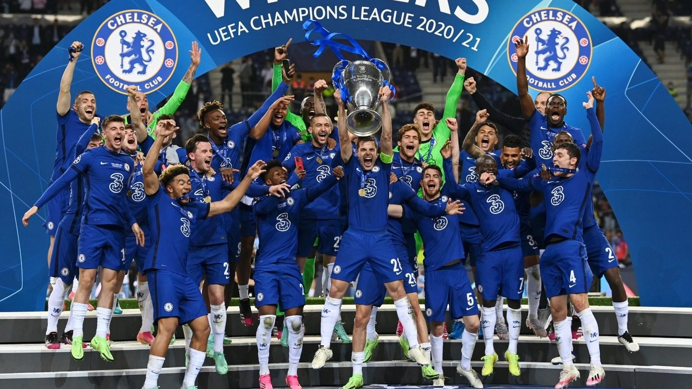

Chelsea won their first major honour, the League championship, in 1955. The club won the FA Cup for the first time in 1970 and their first European honour, the Cup Winners' Cup, in 1971. After a period of decline in the late 1970s and 1980s, the club enjoyed a revival in the 1990s and had more success in cup competitions. The past two decades have been the most successful in Chelsea's history: they have won five Premier League titles, two UEFA Champions League titles and two UEFA Europa League titles during this period. Chelsea are one of five clubs to have won all three of UEFA's main club competitions, the first English club to achieve the UEFA treble, the only London club to have won the Champions League and the only club to have won all three major European competitions twice.
